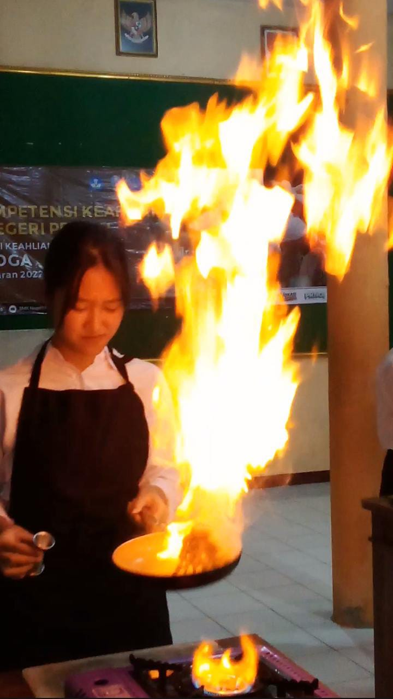
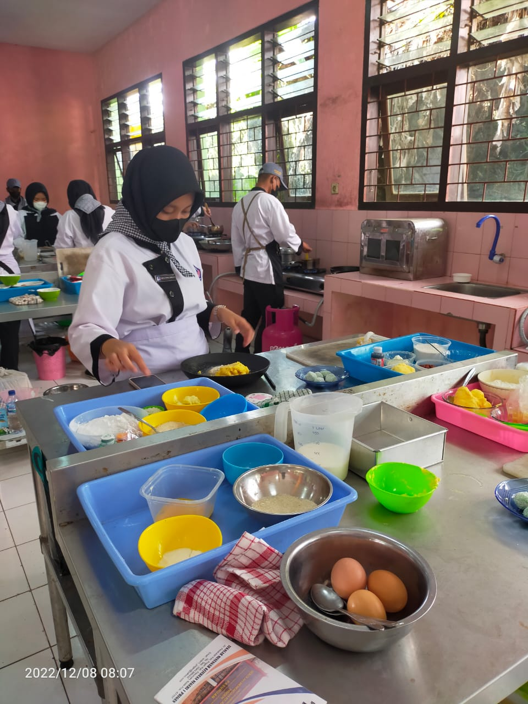
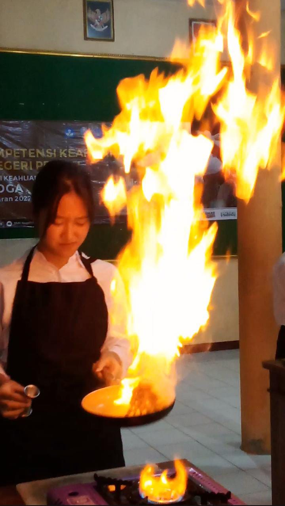
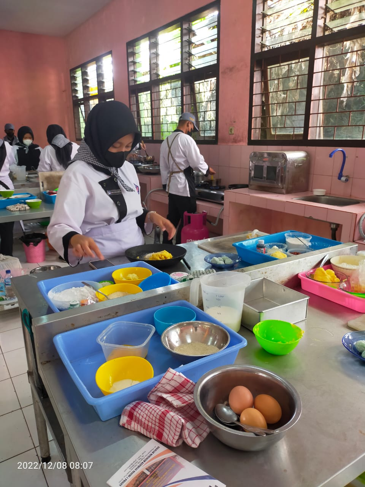
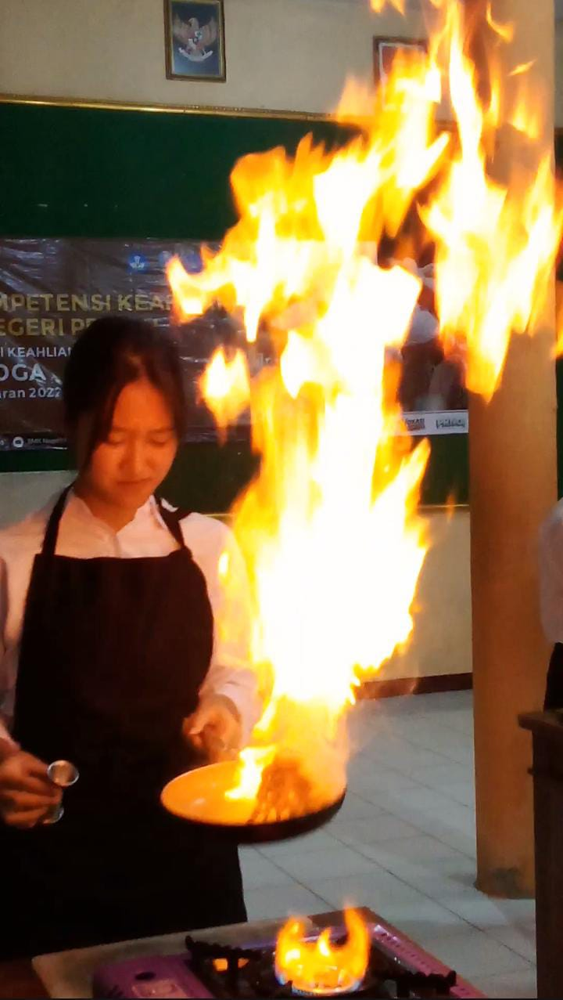
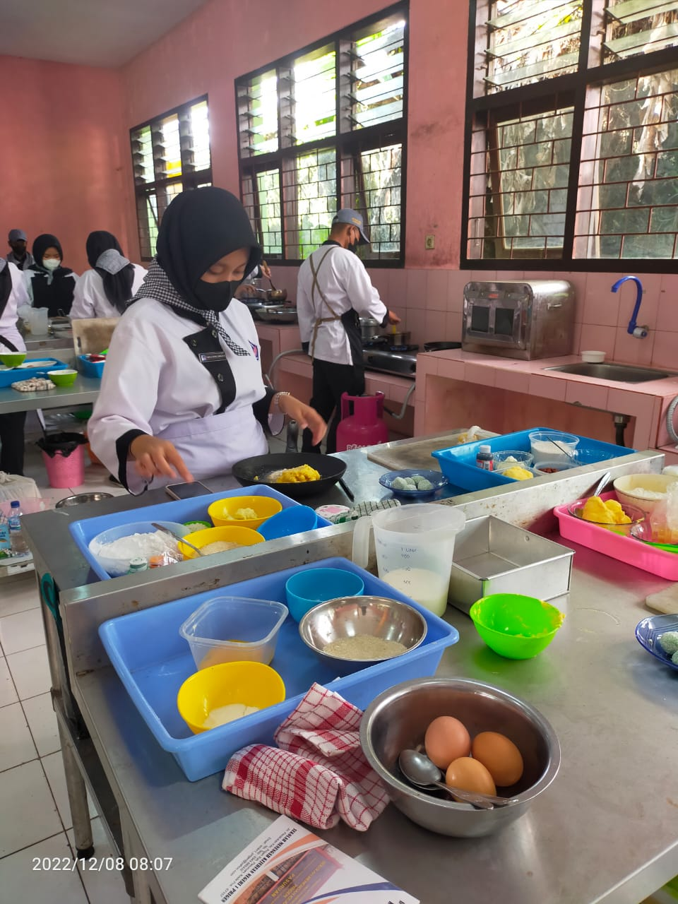

Menjadi asisten koki merupakan suatu pekerjaan yang sangat cocok untuk lulusan SMK tata boga. Dengan kemampuannya di bidang kuliner, lulusan SMK tata boga (kulinary) tentu dapat menjadi asisten koki yang baik. bukan hanya di restauran saja, kamu juga bisa menjadi asisten koki dihotel berbintang dengan gaji yang besar.
